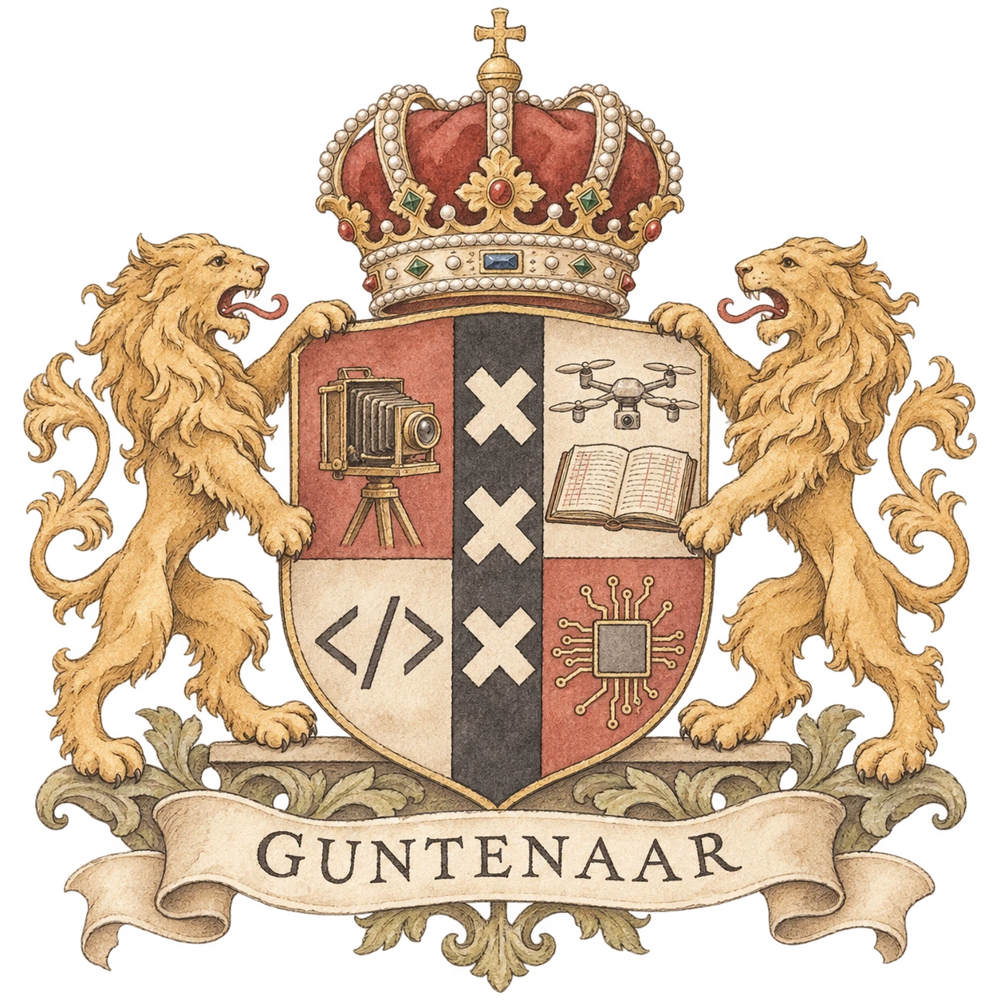
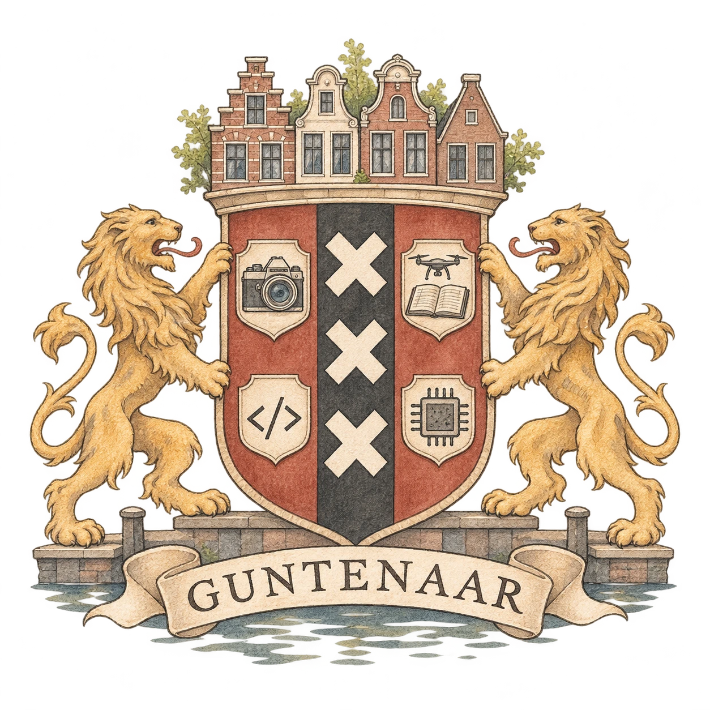
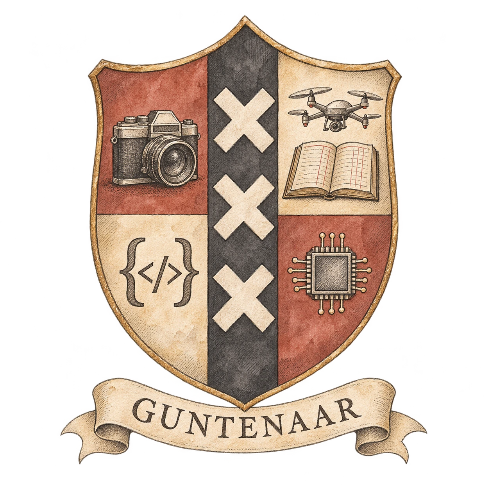

Guntenaar · family crest
Three sketches for our coat of arms.
Amsterdam roots. Four makers. One family.


01 · Classic Amsterdam
The lions, the crown, and four crafts gathered on one shield.


02 · Canal House
Our Amsterdam rooftops become the crown.


03 · Compact Shield
A quieter mark, made to sit lightly in the drawing.